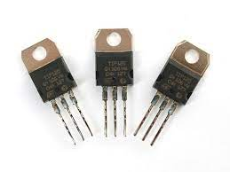

El invento del transistor hizo posible una nueva generación de computadoras más rápidas, con menores necesidades de ventilación y más pequeñas debido a que 200 transistores podían acomodarse en la misma cantidad de espacio que un tubo de vacío. La forma de comunicación con estas nuevas computadoras era mediante lenguajes más avanzados que el lenguaje de máquina, y que reciben el nombre de «lenguajes de alto nivel» o lenguajes de programación, como Fortran y Cobol.
-
